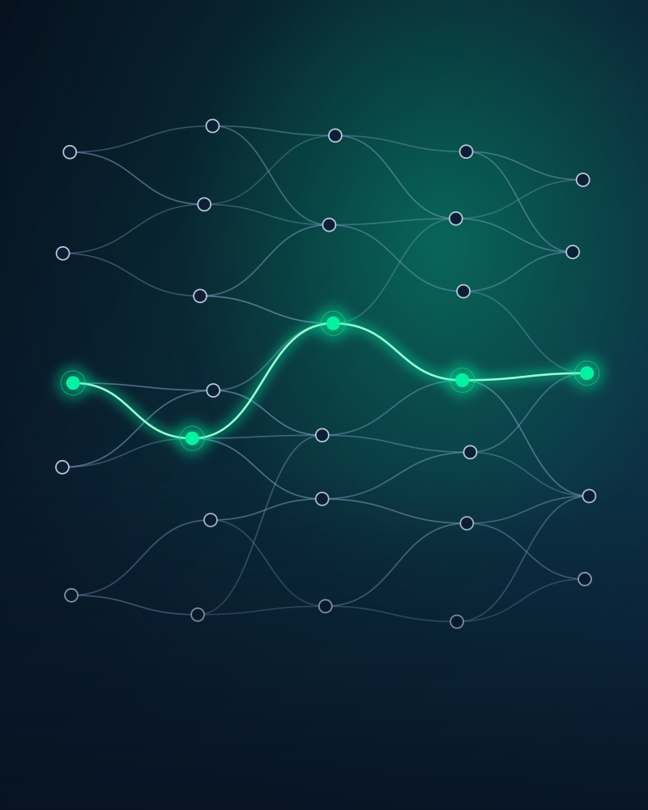

De l’opération au reporting, sans rupture.


Vos règles comptables, enfin lisibles.
Actarule lit le paramétrage de votre interpréteur comptable et documente chaque règle, y compris celles que plus personne ne sait expliquer.
Découvrir Actarule →Des programmes menés jusqu’au résultat.
Création de banque, migration d’interpréteur, clôture accélérée : nos équipes interviennent sur les chantiers qui engagent la comptabilité de l’établissement.
 SAB
Core banking
Banque digitale · Luxembourg
Créer une banque digitale : le volet comptable piloté par nos experts
6 000
règles migrées
Grande banque française · Interprétation comptable
Migrer un interpréteur comptable par rétro-ingénierie
SAB
Core banking
Banque digitale · Luxembourg
Créer une banque digitale : le volet comptable piloté par nos experts
6 000
règles migrées
Grande banque française · Interprétation comptable
Migrer un interpréteur comptable par rétro-ingénierie
 Arrêté
comptable fiabilisé
Banque de financement et d’investissement · Clôture
Diriger la fiabilisation de l’arrêté comptable des marchés et des financements
Arrêté
comptable fiabilisé
Banque de financement et d’investissement · Clôture
Diriger la fiabilisation de l’arrêté comptable des marchés et des financements
Exemples tirés des CV des consultants. Clients anonymisés.
Quatre expertises, un même cabinet.
Les mêmes équipes interviennent côté métier comme côté outils.
 01
Interprétation comptable
Concevoir, migrer et maintenir vos interpréteurs comptables. En partenariat avec Axway.
RDJAISAFAHCentre de services
→
01
Interprétation comptable
Concevoir, migrer et maintenir vos interpréteurs comptables. En partenariat avec Axway.
RDJAISAFAHCentre de services
→
 02
Core banking
Le volet comptable de vos projets SAB et Olympic, du plan de comptes à la bascule.
SABOlympicPlan de comptesBascule
→
03Nouveau
Données et IA
Savoir d’où vient chaque chiffre : nous reconstituons le chemin de la donnée, du reporting à l’événement d’origine.
BCBS 239LignageRétro-ingénierieActarule
→
02
Core banking
Le volet comptable de vos projets SAB et Olympic, du plan de comptes à la bascule.
SABOlympicPlan de comptesBascule
→
03Nouveau
Données et IA
Savoir d’où vient chaque chiffre : nous reconstituons le chemin de la donnée, du reporting à l’événement d’origine.
BCBS 239LignageRétro-ingénierieActarule
→
 04
Conseil Finance
Transformation de la fonction Finance, reportings réglementaires, conformité, rapprochements.
COREPFINREPAnaCreditPilier 3IFRS 9LCB-FT et AMLR
→
04
Conseil Finance
Transformation de la fonction Finance, reportings réglementaires, conformité, rapprochements.
COREPFINREPAnaCreditPilier 3IFRS 9LCB-FT et AMLR
→
Actarule
Choisissez une règle comptable d’exemple et lisez l’explication produite par l’IA. Vous retrouvez le chemin de chaque donnée, du reporting jusqu’à l’événement d’origine.

Quatre chantiers qui vont transformer vos chaînes Finance.
Ce que nous en pensons, et ce que nous y faisons.

Quatre associés, au plus près de vos projets.
Cabinet de conseil opérationnel, expert des fonctions Finance et du SI Finance.
 Mathieu Blachère
Conseil Finance & Conformité
Mathieu Blachère
Conseil Finance & Conformité
 Serge Ribeiro
IT Finance, interprétation comptable
Serge Ribeiro
IT Finance, interprétation comptable

Économie symbiotique et régénérative, numérique responsable.
Où en êtes-vous vraiment ?
Vingt et un diagnostics, sept questions chacun, un résultat immédiat. Sans adresse électronique.